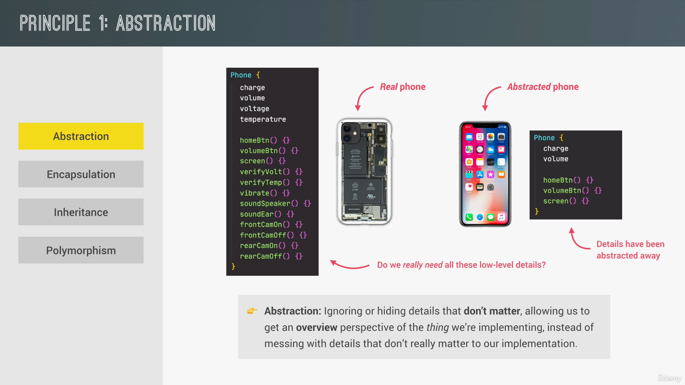
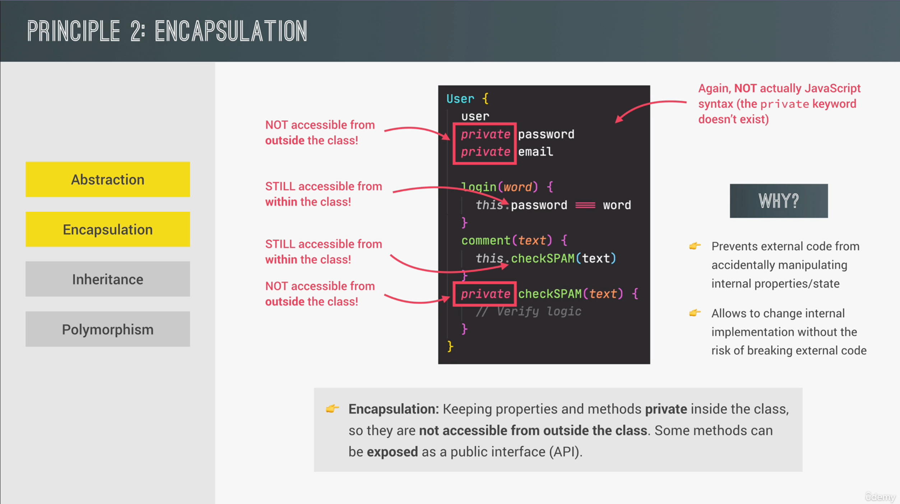
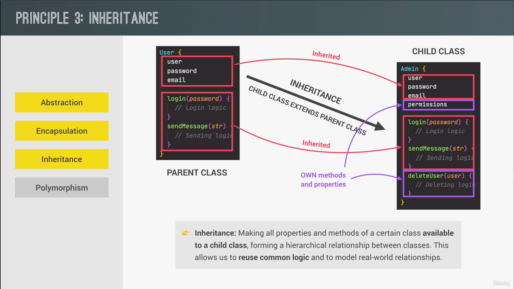
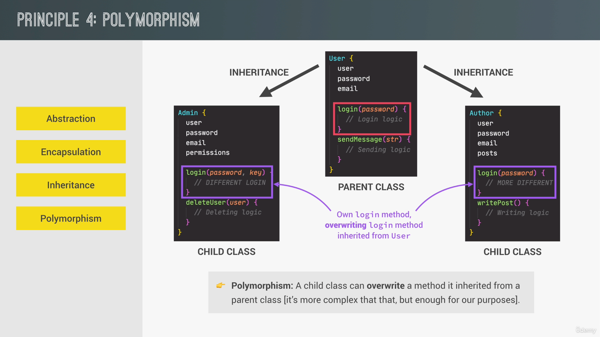
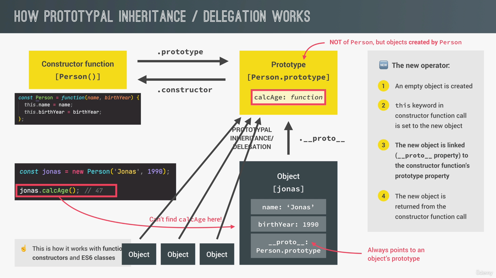
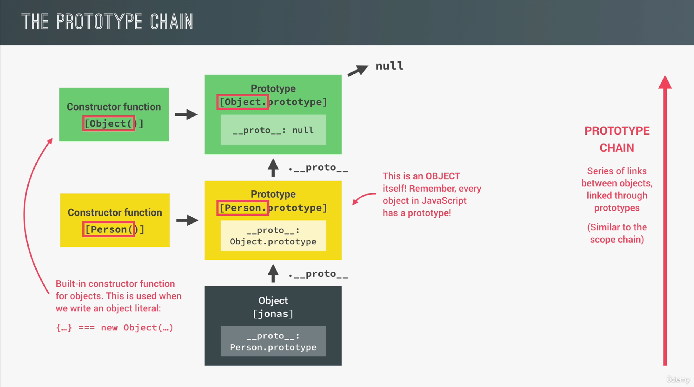

const Person = function (firstName, birthYear) {
this.firstName = firstName;
this.birthYear = birthYear;
};
const john = new Person('John', 1990);
const jane = new Person('Jane', 1985);




class Person {
constructor(name, age) {
this.name = name;
this.age = age;
}
}
class Person {
constructor(name, age) {
this.name = name;
this.age = age;
}
get info() {
return `${this.name} is ${this.age} years old`;
}
set info(value) {
const [name, age] = value.split(' ');
this.name = name;
this.age = age;
}
}
const person = new Person('John', 30);
console.log(person.info); // John is 30 years old
person.info = 'Jane 25';
console.log(person.info); // Jane is 25 years old
class Car {
constructor(make, speed) {
this.make = make;
this.speed = speed;
}
// Instance method
accelerate() {
this.speed += 10;
console.log(`${this.make} is going at ${this.speed} km/h`);
}
// Static method
static honk() {
console.log('Beep beep!');
}
}
const bmw = new Car('BMW', 120);
bmw.accelerate(); // BMW is going at 130 km/h
Car.honk(); // Beep beep!
bmw.honk(); // Error: bmw.honk is not a function
const personProto = {
greet() {
console.log(`Hello, my name is ${this.name}`);
},
};
const john = Object.create(personProto);
john.name = 'John';
john.greet(); // Hello, my name is John
const Vehicle = function (make, speed) {
this.make = make;
this.speed = speed;
};
const Car = function (make, speed, fuel) {
Vehicle.call(this, make, speed); // Inherit properties from Vehicle
this.fuel = fuel;
};
Car.prototype = Object.create(Vehicle.prototype); // New Object will inherit methods from Vehicle
Car.prototype.constructor = Car; // Set the constructor property to Car
class Vehicle {
constructor(make, speed) {
this.make = make;
this.speed = speed;
}
}
class Car extends Vehicle {
constructor(make, speed, fuel) {
super(make, speed); // Inherit properties from Vehicle
this.fuel = fuel;
}
}
const vehicleProto = {
accelerate() {
this.speed += 10;
console.log(`${this.make} is going at ${this.speed} km/h`);
},
};
// Create Car prototype that inherits from vehicleProto
const carProto = Object.create(vehicleProto);
carProto.init = function (make, speed, fuel) {
this.make = make;
this.speed = speed;
this.fuel = fuel;
};
const myCar = Object.create(carProto);
myCar.init('BMW', 120, 'Petrol');
myCar.accelerate(); // BMW is going at 130 km/h
class Account {
constructor(owner, currency, pin) {
this.owner = owner;
this.currency = currency;
this.pin = pin;
this.movements = [];
this.locale = navigator.language;
}
deposit(val) {
// Public Interface. We are using deposit method to add money to the account.
this.movements.push(val);
}
withdraw(val) {
this.deposit(-val); // Abstraction. We are using deposit method to withdraw money by passing negative value.
}
_approveLoan(val) {
return true;
}
requestLoan(val) {
if (this._approveLoan(val)) {
// Encapsulation. We are using a private method to approve loan which is not accessible outside the class.
this.deposit(val);
console.log(`Loan approved`);
}
}
}
const acc1 = new Account('Jonas', 'EUR', 1111);
console.log(acc1);
acc1.deposit(250);
acc1.withdraw(100);
acc1.requestLoan(1000);
class BankAccount {
#balance; // Private field
constructor(initialBalance) {
this.#balance = initialBalance;
}
deposit(amount) {
this.#balance += amount;
console.log(`Deposited ${amount}. New balance: ${this.#balance}`);
}
withdraw(amount) {
if (amount > this.#balance) {
console.log('Insufficient funds');
} else {
this.#balance -= amount;
console.log(`Withdrew ${amount}. New balance: ${this.#balance}`);
}
}
}
const account = new BankAccount(1000);
account.deposit(500); // Deposited 500. New balance: 1500
account.withdraw(200); // Withdrew 200. New balance: 1300
account.#balance; // Error: Private field '#balance' must be declared in an enclosing class
class Calculator {
constructor(value = 0) {
this.value = value;
}
add(num) {
this.value += num;
return this; // Return the current instance to enable chaining
}
subtract(num) {
this.value -= num;
return this; // Return the current instance to enable chaining
}
multiply(num) {
this.value *= num;
return this; // Return the current instance to enable chaining
}
divide(num) {
this.value /= num;
return this; // Return the current instance to enable chaining
}
getResult() {
return this.value;
}
}
const calc = new Calculator();
const result = calc.add(10).subtract(5).multiply(2).divide(3).getResult();
console.log(result); // 3.3333333333333335